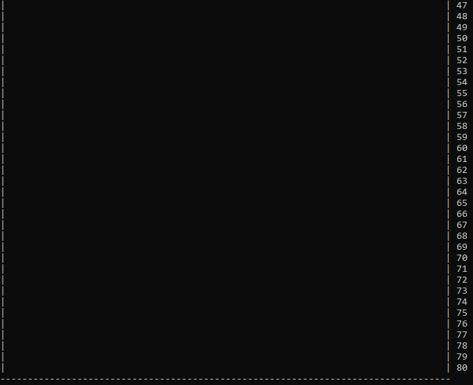
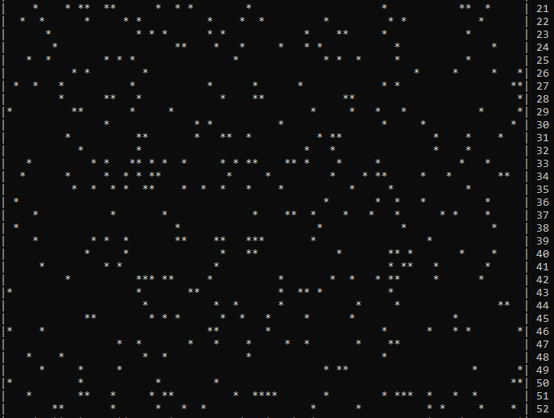

Testo:
Algoritmo di simulazione di popolazioni di cellule.
L’algoritmo considera una scacchiera di 80x80 caselle e dispone a caso (usando la function rand) 1000 oggetti (la posizione e' una coppia di numeri interi). L’algoritmo deve visualizzare la scacchiera, mostrando un ‘ ’ per le caselle non occupate e mostrando una ‘*’ per le caselle occupate dagli oggetti.
L’algoritmo effettua la seguente simulazione.
Ogni casella rappresenta una “cellula”, e in particolare una casella non occupata e' una cellula “bianca” e una casella occupata e' una cellula “nera”. La scacchiera e' dunque una “fotografia” a un certo istante (passo) della popolazione di cellule bianche e nere. Le cellule evolvono secondo la seguente legge: a ogni passo, ogni cellula considera il numero totale di cellule nere presenti nelle 9 caselle vicine (la casella della cellula stessa e le 8 caselle adiacenti, comprese le 4 sulle diagonali). Se il totale e' minore di 4, allora la cellula diventa bianca al prossimo passo, mentre se il totale e' maggiore di 6 allora diventa nera. Se il totale e' esattamente 5, allora la cellula diventa bianca, e se il totale e' esattamente 4, allora diventa nera. Fare attenzione al fatto che la scacchiera deve essere aggiornata solo alla fine di ogni passo: ciò significa che l’algoritmo deve usare un array per memorizzare la scacchiera attuale e un array per memorizzare la scacchiera modificata. Inoltre si deve considerare che la scacchiera “non ha bordi”, ovvero il bordo nord e quello sud devono essere considerati contigui e il bordo est e quello ovest devono essere considerati contigui. L’algoritmo deve visualizzare la scacchiera ai seguenti passi: 1,2,3,4,5,10,20,30,40,50,100,50,200,250,300,350,400,450,500,550,600,700,800, indicando sempre con ‘ ‘ una cellula bianca e con ‘*’ una cellula nera.
Osserviamo:
Questo esercizio considera una scacchiera di 80x80 caselle e dispone a caso (usando la function rand) 1000 oggetti. L’algoritmo deve visualizzare la scacchiera, mostrando uno spazio vuoto per le caselle non occupate e un asterisco per le caselle occupate dagli oggetti. La scacchiera viene considerata come una "fotografia" a ogni istante (o passo) della popolazione di cellule bianche oppure nere.A ogni passo, ogni cellula considera le 9 cellule vicine (ovvero, la casella della cellula stessa e le 8 caselle adiacenti). Le regole sono le seguenti:
1) Se il totale e' minore di 4, allora la cellula diventerà bianca al prossimo passo
2) Se il totale e' maggiore di 6 allora diventerà nera
3) Se il totale e' esattamente 5, allora la cellula diventerà bianca
4) Se il totale e' esattamente 4, allora diventerà nera
Le modifiche vengono effettuate su un array di appoggio, soltanto alla fine di ogni procedura verranno copiate nell'array principale.
Dopodiché la scacchiera appena modificata, viene mostrata a video solo in determinati passi.
Algoritmo:
#define _CRT_SECURE_NO_WARNINGS //utilizzo questa dicitura per evitare di far generare dei warnings all'IDE Visual Studio
#include <stdio.h>
#include <stdlib.h>
#include <time.h>
#define lunghezza 80
#define larghezza 80
//Definizioni
char scacchiera[lunghezza][larghezza]; //Genera la scacchiera principale, di grandezza 80x80
char scacchiera_mod[lunghezza][larghezza]; //Genera una scacchiera secondaria per il rimescolamento
void scegli();
void imposta_scacchiera();
void visualizza_scacchiera(char [][larghezza]);
void rimescola_dati();
/* Qui non accade nulla di speciale. Viene richiamata la procedura 'scegli', ovvero il menu' principale */
void main()
{
printf("Progetto d'Esame di Laboratorio\nTitolo Progetto: Cellule\nStudente: Tartaglia Luca\n\n");
imposta_scacchiera();
}
/* Menu' principale del programma.
- Inseriamo 1 se vogliamo visualizzare la scacchiera
- Inseriamo 2 se vogliamo rimescolare i dati secondo l'algoritmo richiesto dal problema
- Inseriamo 3 se vogliamo effettuare le simulazioni che richiede la traccia dell'esercizio
*/
void scegli()
{
printf("\n---MENU PRINCIPALE---\nEffettua una scelta:\n");
printf(" [1] Visualizza la scacchiera\n [2] Rimescola i dati in modo casuale\n [3] Effettua la simulazione\n");
int scelta = 0;
scanf("%d", &scelta);
switch (scelta) {
case 1:
visualizza_scacchiera(scacchiera);
scegli();
break;
case 2:
imposta_scacchiera();
break;
case 3:
rimescola_dati();
break;
default:
printf("\nLa scelta effettuata non e' valida!\n");
scegli();
break;
}
}
/* Questa function setta la scacchiera principale come un insieme di spazi vuoti e genera 1000 posizioni casuali tramite una function rand */
void imposta_scacchiera()
{
int i, j;
//Inizializza la scacchiera impostando gli spazi vuoti
for (i = 0; i < lunghezza; i++)
for (j = 0; j < larghezza; j++)
scacchiera[i][j] = ' ';
srand(time(NULL));
//Genera 1000 numeri casuali per la scacchiera
for (i = 1; i <= 1000; i++)
//genera a caso una posizione nella scacchiera
scacchiera[rand()%larghezza][rand () % lunghezza] = '*';
scegli();
}
/* Algoritmo per visualizzare la scacchiera.
Prende in input la scacchiera che si desidera visualizzare e procede con la stampa sullo schermo.
*/
void visualizza_scacchiera(char s[][larghezza])
{
int i, j;
//Questo costrutto viene utilizzato per delle piccole finezze estetiche
for (i = 0; i < larghezza + 2; i++)
printf("-");
printf("\n");
for (i = 0; i < lunghezza; i++)
{
printf("|"); //Per visualizzare il limite sinistro della scacchiera
for (j = 0; j < larghezza; j++)
{
printf("%c", s[i][j]);
}
printf("| %d\n", i + 1); //Per visualizzare il limite destro della scacchiera e il numero della riga
}
//Altre semplici finezze estetiche, uguale a quello di prima
for (i = 0; i < larghezza + 2; i++)
printf("-");
printf("\n");
}
/* Questa function rappresenta il punto cruciale dell'esercizio:
Le cellule evolvono secondo la seguente legge: a ogni passo, ogni cellula considera il
numero totale di cellule nere presenti nelle 9 caselle vicine (la casella della cellula stessa
e le 8 caselle adiacenti, comprese le 4 sulle diagonali). Se il totale e' minore di 4, allora la
cellula diventa bianca al prossimo passo, mentre se il totale e' maggiore di 6 allora
diventa nera. Se il totale e' esattamente 5, allora la cellula diventa bianca, e se il totale e'
esattamente 4, allora diventa nera. La scacchiera deve essere aggiornata solo alla fine di ogni passo:
ciò significa che l’algoritmo deve usare un array per memorizzare la scacchiera attuale e un array per
memorizzare la scacchiera modificata. Inoltre si deve considerare che la scacchiera “non ha bordi”, ovvero
il bordo nord e quello sud devono essere considerati contigui e il bordo est e quello ovest devono essere considerati contigui. */
void rimescola_dati()
{
int passo, i, j, m, n, c;
//Resetta i dati della scacchiera modificata (per una stampa su schermo ottimale)
for (i = 0; i < lunghezza; i++)
for (j = 0; j < larghezza; j++)
scacchiera_mod[i][j] = ' ';
printf("\n---Ecco come era la scacchiera all'inizio---\n");
visualizza_scacchiera(scacchiera);
for (passo = 1; passo <= 800; passo++)
{
for (i = 0; i < lunghezza; i++)
{
for (j = 0; j < larghezza; j++)
{
c = 0; //Imposta il contatore a 0
//Inizia dalla diagonale in alto a sinistra della posizione [i][j] e termina con la diagonale in basso a destra
for (m = (i - 1); m <= (i + 1); m++)
{
for (n = (j - 1); n <= (j + 1); n++)
{
/*Questa if assicura il corretto conteggio delle cellule adiacenti: necessaria se la posizione corrente e' ai limiti della scacchiera*/
if (m < 0 || n < 0 || n > lunghezza - 1 || m > larghezza - 1) continue;
if (scacchiera[m][n] == '*') c++;
}
}
if (c < 4) scacchiera_mod[i][j] = ' '; // Se il totale e' minore di 4, allora la cellula diventerà bianca
if (c > 6) scacchiera_mod[i][j] = '*'; // Se il totale e' maggiore di 6, allora la cellula diventerà nera
if (c == 5) scacchiera_mod[i][j] = ' '; // Se il totale e' uguale a 5, allora la cellula diventerà bianca
if (c == 4) scacchiera_mod[i][j] = '*'; // Se il totale e' uguale a 4, allora la cellula diventerà nera
}
}
//Aggiorna la scacchiera principale
for (i = 0; i < lunghezza; i++)
for (j = 0; j < larghezza; j++)
scacchiera[i][j] = scacchiera_mod[i][j];
/*L’algoritmo deve visualizzare la scacchiera ai seguenti passi: 1,2,3,4,5,10,20,30,40,50,100,
150,200,250,300,350,400,450,500,550,600,700,800, indicando sempre con ‘ ‘ una cellula bianca e con ‘*’ una cellula nera. */
if (passo == 1 || passo == 2 || passo == 3 || passo == 4 || passo == 5 || passo == 10 || passo == 20 || passo == 30 || passo == 40 || passo == 50 || passo == 100 || passo == 150 || passo == 200 || passo == 250 || passo == 300 || passo == 350 || passo == 400 || passo == 450 || passo == 500 || passo == 550 || passo == 600 || passo == 700 || passo == 800)
{
visualizza_scacchiera(scacchiera);
printf("\n---Visualizzo il passo n. %d---\n", passo);
system("pause");
}
}
scegli();
}
I test:
Primo Test
Generiamo una scacchiera, tramite la function random.
Al passo 1 diventerà così...

... al passo 2 ...
... al passo 3 ...
... e infine al passo 4.
Da come possiamo intuire, la scacchiera non cambierà affatto negli step successivi, poiché un qualsiasi punto di quelle 4 coordinate avrà sempre 4 caselle vicine.
Secondo Test
Generiamo un'altra scacchiera random.Il primo passo
Il terzo passo
Il ventesimo passo

In questo caso, non si sono generate caselle vicine l'una con l'altra come nel primo test.
Terzo Test
Generiamo, per un'ultima volta, la scacchiera.
Il passo n. 4
Il passo n. 800